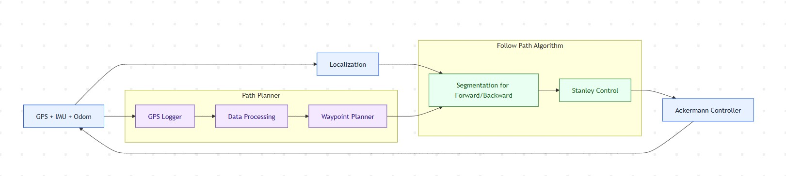

Part 2 · Deployment Projects
Project B: My Role and Outcomes
Responsibilities and outcomes in the project
Role and Responsibilities
- Implemented localization with GPS/RTK, IMU, and odometry fusion
- Calibrated sensors and tuned fusion for better outdoor localization
- Designed waypoint flow from GPS logging and data processing
- Built forward/reverse segmentation with Stanley-based tracking
- Validated planning and control in simulation before field tests
Key Results and Outcomes
- Better tracking on outdoor routes with Ackermann control
- Improved maneuverability in constrained spaces
- Improved localization consistency through GPS/RTK integration
- Lower integration risk through simulation-first verification
Focus: outdoor operation that holds up in real conditions.
